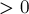
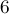

MAXimal
добавлено: 11 Jun 2008 10:35
редактировано: 26 Apr 2012 2:00
Содержание [скрыть]
Z-функция строки и её вычисление
Пусть дана строка  длины
длины  . Тогда Z-функция ("зет-функция") от этой строки — это массив длины ,
. Тогда Z-функция ("зет-функция") от этой строки — это массив длины ,  -ый элемент которого равен наибольшему числу символов, начиная с позиции , совпадающих с первыми символами строки .
-ый элемент которого равен наибольшему числу символов, начиная с позиции , совпадающих с первыми символами строки .
Иными словами, — это наибольший общий префикс строки и её -го суффикса.
Примечание. В данной статье, во избежание неопределённости, мы будем считать строку 0-индексированной — т.е. первый символ строки имеет индекс  , а последний —
, а последний —  .
.
Первый элемент Z-функции, ![z[0]](../tex2png/cache/f3d91ab957722ffd550030138b21249b.png) , обычно считают неопределённым. В данной статье мы будем считать, что он равен нулю (хотя ни в алгоритме, ни в приведённой реализации это ничего не меняет).
, обычно считают неопределённым. В данной статье мы будем считать, что он равен нулю (хотя ни в алгоритме, ни в приведённой реализации это ничего не меняет).
В данной статье приводится алгоритм вычисления Z-функции за время  , а также различные применения этого алгоритма.
, а также различные применения этого алгоритма.
Примеры
Приведём для примера подсчитанную Z-функцию для нескольких строк:
- :
- :
- :
Тривиальный алгоритм
Формальное определение можно представить в виде следующей элементарной реализации за  :
:
vector<int> z_function_trivial (string s) { int n = (int) s.length(); vector<int> z (n); for (int i=1; i<n; ++i) while (i + z[i] < n && s[z[i]] == s[i+z[i]]) ++z[i]; return z; }
Мы просто для каждой позиции перебираем ответ для неё , начиная с нуля, и до тех пор, пока мы не обнаружим несовпадение или не дойдём до конца строки.
Разумеется, эта реализация слишком неэффективна, перейдём теперь к построению эффективного алгоритма.
Эффективный алгоритм вычисления Z-функции
Чтобы получить эффективный алгоритм, будем вычислять значения по очереди — от  до , и при этом постараемся при вычислении очередного значения максимально использовать уже вычисленные значения.
до , и при этом постараемся при вычислении очередного значения максимально использовать уже вычисленные значения.
Назовём для краткости подстроку, совпадающую с префиксом строки , отрезком совпадения. Например, значение искомой Z-функции — это длиннейший отрезок совпадения, начинающийся в позиции (и заканчиваться он будет в позиции ).
Для этого будем поддерживать координаты ![[l;r]](../tex2png/cache/26853b907ea3f6227b00c5afac10292a.png) самого правого отрезка совпадения, т.е. из всех обнаруженных отрезков будем хранить тот, который оканчивается правее всего. В некотором смысле, индекс
самого правого отрезка совпадения, т.е. из всех обнаруженных отрезков будем хранить тот, который оканчивается правее всего. В некотором смысле, индекс  — это такая граница, до которой наша строка уже была просканирована алгоритмом, а всё остальное — пока ещё не известно.
— это такая граница, до которой наша строка уже была просканирована алгоритмом, а всё остальное — пока ещё не известно.
Тогда если текущий индекс, для которого мы хотим посчитать очередное значение Z-функции, — это , мы имеем один из двух вариантов:
- r"> — т.е. текущая позиция лежит за пределами того, что мы уже успели обработать.
Тогда будем искать тривиальным алгоритмом, т.е. просто пробуя значения , , и т.д. Заметим, что в итоге, если окажется 0">, то мы будем обязаны обновить координаты самого правого отрезка
— т.к. гарантированно окажется больше . - — т.е. текущая позиция лежит внутри отрезка совпадения .
Тогда мы можем использовать уже подсчитанные предыдущие значения Z-функции, чтобы проинициализировать значение не нулём, а каким-то возможно бОльшим числом.
Для этого заметим, что подстроки и совпадают. Это означает, что в качестве начального приближения для можно взять соответствующее ему значение из отрезка , а именно, значение .
Однако значение могло оказаться слишком большим: таким, что при применении его к позиции
оно "вылезет" за пределы границы . Этого допустить нельзя, т.к. про символы правее мы ничего не знаем, и они могут отличаться от требуемых.Приведём пример такой ситуации, на примере строки:

Когда мы дойдём до последней позиции (), текущим самым правым отрезком будет . Позиции  с учётом этого отрезка будет соответствовать позиция , ответ в которой равен . Очевидно, что таким значением инициализировать нельзя, оно совершенно некорректно. Максимум, каким значением мы могли проинициализировать — это
 , поскольку это наибольшее значение, которое не вылазит за пределы отрезка .
, поскольку это наибольшее значение, которое не вылазит за пределы отрезка .Таким образом, в качестве начального приближения для безопасно брать только такое выражение:
Проинициализировав таким значением , мы снова дальше действуем тривиальным алгоритмом — потому что после границы
, вообще говоря, могло обнаружиться продолжение отрезка совпадение, предугадать которое одними лишь предыдущими значениями Z-функции мы не могли.
Таким образом, весь алгоритм представляет из себя два случая, которые фактически различаются только начальным значением : в первом случае оно полагается равным нулю, а во втором — определяется по предыдущим значениям по указанной формуле. После этого обе ветки алгоритма сводятся к выполнению тривиального алгоритма, стартующего сразу с указанного начального значения.
Алгоритм получился весьма простым. Несмотря на то, что при каждом в нём так или иначе выполняется тривиальный алгоритм — мы достигли существенного прогресса, получив алгоритм, работающий за линейное время. Почему это так, рассмотрим ниже, после того, как приведём реализацию алгоритма.
Реализация
Реализация получается весьма лаконичной:
vector<int> z_function (string s) { int n = (int) s.length(); vector<int> z (n); for (int i=1, l=0, r=0; i<n; ++i) { if (i <= r) z[i] = min (r-i+1, z[i-l]); while (i+z[i] < n && s[z[i]] == s[i+z[i]]) ++z[i]; if (i+z[i]-1 > r) l = i, r = i+z[i]-1; } return z; }
Прокомментируем эту реализацию.
Всё решение оформлено в виде функции, которая по строке возвращает массив длины — вычисленную Z-функцию.
Массив изначально заполняется нулями. Текущий самый правый отрезок совпадения полагается равным , т.е. заведомо маленький отрезок, в который не попадёт ни одно .
Внутри цикла по мы сначала по описанному выше алгоритму определяем начальное значение — оно либо останется нулём, либо вычислится на основе приведённой формулы.
После этого выполняется тривиальный алгоритм, который пытается увеличить значение настолько, насколько это возможно.
В конце выполняется обновление текущего самого правого отрезка совпадения , если, конечно, это обновление требуется — т.е. если r">.
Асимптотика алгоритма
Докажем, что приведённый выше алгоритм работает за линейное относительно длины строки время, т.е. за .
Доказательство очень простое.
Нас интересует вложенный цикл  — т.к. всё остальное — лишь константные операции, выполняемые раз.
— т.к. всё остальное — лишь константные операции, выполняемые раз.
Покажем, что каждая итерация этого цикла приведёт к увеличению правой границы на единицу.
Для этого рассмотрим обе ветки алгоритма:
- r">
В этом случае либо цикл
не сделает ни одной итерации (если ), либо же сделает несколько итераций, продвигаясь каждый раз на один символ вправо, начиная с позиции , а после этого — правая граница обязательно обновится.Поскольку r">, то мы получаем, что действительно каждая итерация этого цикла увеличивает новое значение
на единицу. В этом случае мы по приведённой формуле инициализируем значение некоторым числом . Сравним это начальное значение с величиной , получаем три варианта:
Докажем, что в этом случае ни одной итерации цикл
не сделает.Это легко доказать, например, от противного: если бы цикл
сделал хотя бы одну итерацию, это бы означало, что определённое нами значение было неточным, меньше настоящей длины совпадения. Но т.к. строки и совпадают, то это означает, что в позиции стоит неправильное значение: меньше, чем должно быть.Таким образом, в этом варианте из корректности значения и из того, что оно меньше , следует, что это значение совпадает с искомым значением .

В этом случае цикл
может совершить несколько итераций, однако каждая из них будет приводить к увеличению нового значения на единицу: потому что первым же сравниваемым символом будет , который вылазит за пределы отрезка .- r-i+1">
Этот вариант принципиально невозможен, в силу определения .
Таким образом, мы доказали, что каждая итерация вложенного цикла приводит к продвижению указателя вправо. Т.к. не могло оказаться больше , это означает, что всего этот цикл сделает не более итерации.
Поскольку вся остальная часть алгоритма, очевидно, работает за , то мы доказали, что и весь алгоритм вычисления Z-функции выполняется за линейное время.
Применения
Рассмотрим несколько применений Z-функции при решении конкретных задач.
Применения эти будут во многом аналогичным применениям префикс-функции.
Поиск подстроки в строке
Во избежании путаницы, назовём одну строку текстом  , другую — образцом
, другую — образцом  . Таким образом, задача заключается в том, чтобы найти все вхождения образца в текст .
. Таким образом, задача заключается в том, чтобы найти все вхождения образца в текст .
Для решения этой задачи образуем строку , т.е. к образцу припишем текст через символ-разделитель (который не встречается нигде в самих строках).
Посчитаем для полученной строки Z-функцию. Тогда для любого в отрезке по соответствующему значению можно понять, входит ли образец в текст , начиная с позиции : если это значение Z-функции равно , то да, входит, иначе — нет.
Таким образом, асимптотика решения получилась . Потребление памяти имеет ту же асимптотику.
Количество различных подстрок в строке
Дана строка длины . Требуется посчитать количество её различных подстрок.
Будем решать эту задачу итеративно. А именно, научимся, зная текущее количество различных подстрок, пересчитывать это количество при добавлении в конец одного символа.
Итак, пусть  — текущее количество различных подстрок строки , и мы добавляем в конец символ
— текущее количество различных подстрок строки , и мы добавляем в конец символ  . Очевидно, в результате могли появиться некоторые новые подстроки, оканчивавшиеся на этом новом символе (а именно, все подстроки, оканчивающиеся на этом символе, но не встречавшиеся раньше).
. Очевидно, в результате могли появиться некоторые новые подстроки, оканчивавшиеся на этом новом символе (а именно, все подстроки, оканчивающиеся на этом символе, но не встречавшиеся раньше).
Возьмём строку и инвертируем её (запишем символы в обратном порядке). Наша задача — посчитать, сколько у строки таких префиксов, которые не встречаются в ней более нигде. Но если мы посчитаем для строки Z-функцию и найдём её максимальное значение , то, очевидно, в строке встречается (не в начале) её префикс длины , но не большей длины. Понятно, префиксы меньшей длины уже точно встречаются в ней.
Итак, мы получили, что число новых подстрок, появляющихся при дописывании символа , равно , где — текущая длина строки после приписывания символа .
Следовательно, асимптотика решения для строки длины составляет .
Стоит заметить, что совершенно аналогично можно пересчитывать за количество различных подстрок и при дописывании символа в начало, а также при удалении символа с конца или с начала.
Сжатие строки
Дана строка длины . Требуется найти самое короткое её "сжатое" представление, т.е. найти такую строку наименьшей длины, что можно представить в виде конкатенации одной или нескольких копий .
Для решения посчитаем Z-функцию строки , и найдём первую позицию такую, что , и при этом делится на . Тогда строку можно сжать до строки длины .
Доказательство такого решения практически не отличается от доказательства решения с помощью префикс-функции.
Задачи в online judges
Список задач, которые можно решить, используя Z-функцию: